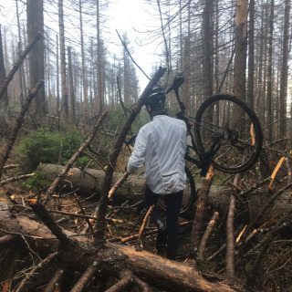

This app works best with JavaScript enabled.
Florian Kluger
Google Scholar
GitHub
LinkedIn
Strava
flickr
RIOT PACK

PhD student, Computer Vision and Machine Learning
Institut für Informationsverarbeitung
, Leibniz University Hannover, Germany
Teaching machines stuff by day,
shredding bikes by night.
Selected Publications
Deep Learning for Vanishing Point Detection Using an Inverse Gnomonic Projection
Florian Kluger, Hanno Ackermann, Michael Ying Yang, Bodo Rosenhahn
PDF
Code